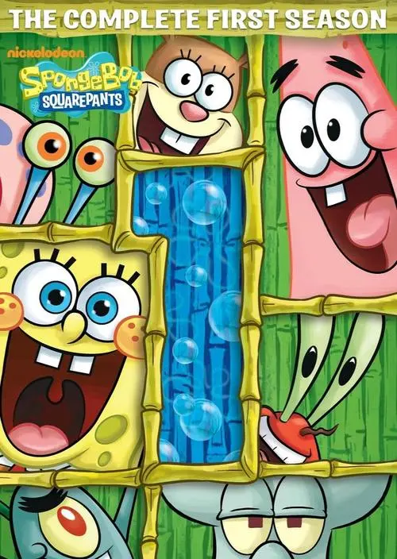
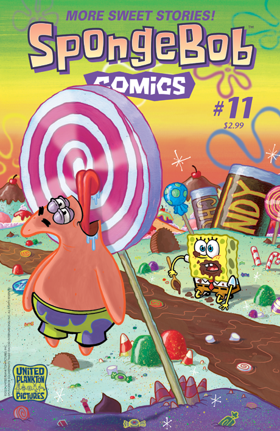
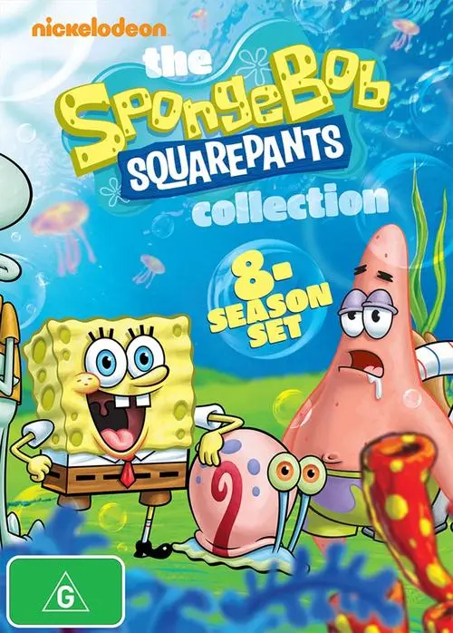

SPONGEBOB
Spongebob Introduction
下方图片可上下滑动
  
海绵宝宝是方块形的黄色海绵，住在比基尼海滩（裤头村、比奇堡）的一个菠萝里，他的宠物是一只会“喵～喵~”叫的海蜗牛小蜗.
海绵宝宝喜欢捕捉水母，职业是蟹堡王（The Krusty Krab）里的头号厨师。派大星和珊迪都是他的朋友。
海绵宝宝总是能给平静的世界制造麻烦，虽然闹出一些笑话，不过他总能摆脱困境，然后又制造出新的麻烦。